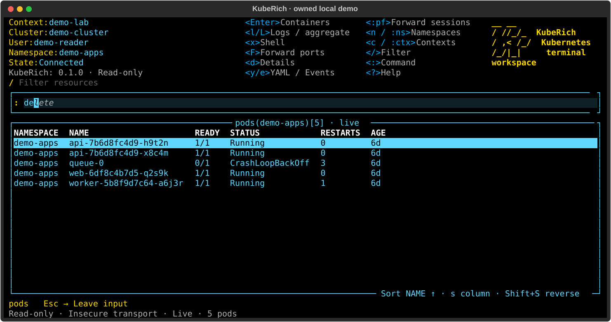
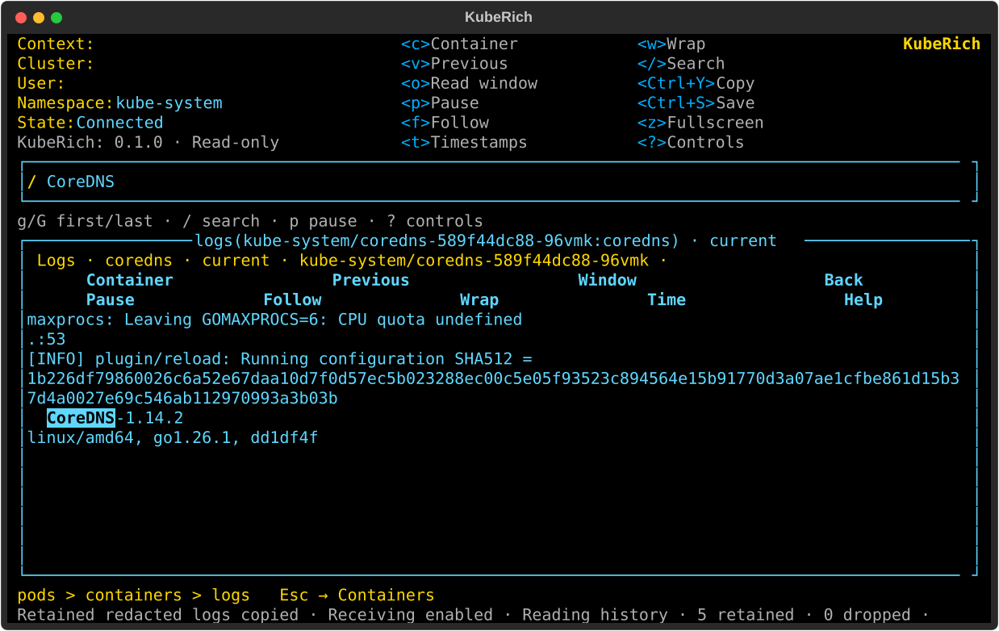

Start with your context.
Browse contexts and namespaces, filter resource tables, and move between views without losing your selection.
Learn the navigationKUBERNETES, FROM YOUR TERMINAL
See what’s running. Follow a log. Open a shell. KubeRich brings your everyday cluster work into one keyboard-driven workspace.
Open source · Python + Textual · Your kubeconfig
$version$installation_status
Browse contexts and namespaces, filter resource tables, and move between views without losing your selection.
Learn the navigationOpen details, YAML, events and container logs. Connect to an embedded shell, then return to where you left off.
Inspect a resourceReview the captured target before editing, scaling or deleting. Start in read-only mode to explore without writes or shells.
Understand guarded changesIN THE WORKSPACE
Useful today, with clear limits. The guides describe what works, what it needs, and what’s still being built.
See current scopeA CLOSER LOOK
Stop following to read earlier lines while new output arrives within a bounded buffer. Search retained lines, follow new output, and return to the same container.
Explore the log viewer
GET ACQUAINTED
Choose an installation method and an intended context. Start with the installation guide, then explore at your own pace.
kuberich --context demo-lab --namespace demo-apps --readonlyFictional example names; replace with your intended scope. See the installation guide for available channels and platform support.
Generic CRD views and aggregate logs are delivered. Live usage metrics, creating ephemeral debug containers and user plugins remain planned. Complete K9s parity and real-cloud certification are not claimed.